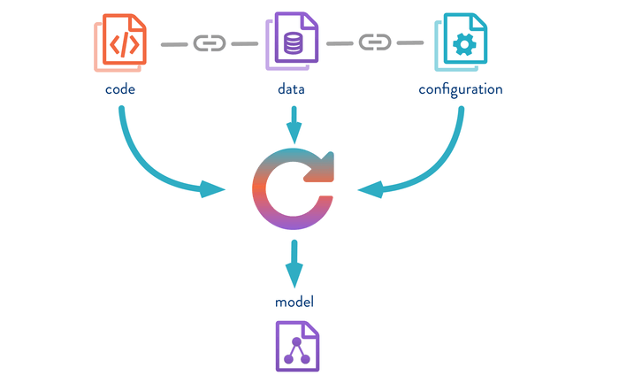
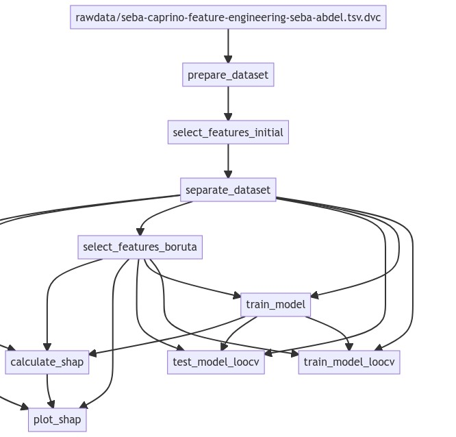
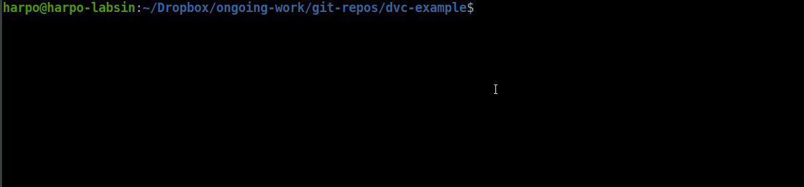

Why Using DVC
This is the first part of a series of posts discussing the more relevant aspects of using DVC. Part 2 introducing stage pipelines is available here.
The idea behind DVC
Notebooks (Jupyter, Colab, Rstudio for R, or even the new Pluto for Julia) are fantastic tools for getting code, plots, and documentation in one place. These benefits are perhaps the cause behind their massive adoption in current machine learning and data science projects.
Unfortunately, despite all their benefits, notebooks can be a real pain if you don’t follow a set of good practices. As soon as the notebook gets big, things start to get messy. How often do we repeat the same code in different chunks (with minor changes) ? How many times do we keep a portion of code not used anymore in the same notebook (just in case)? How many times do we end up running chunks in a particularly bizarre sequence to test a particular approach? And what happens when a new dataset is provided? I know these a pretty extreme and insane cases. Sure you can structure your notebooks to be understandable, modular, and easily adaptable. But, let’s face it, notebooks don’t help us to follow software engineering good practices 😠.
Let’s face it, notebooks don’t help us to follow software engineering good practices.
DVC is a tool for dealing with some of the problems we mentioned above. DVC stands for Data Version Control and is specially focused on Machine Learning projects. The general idea of DVC is to guarantee the consistency of your experiment. In other words, DVC helps you to keep track of changes in your data, model, parameters, and scripts. But also DVC provides tools for repeating and analyzing your experiment to achieve the desired results.
Perhaps the main advantage of DVC is its integration with git. In a previous post, I discussed an approach for using git and GitHub for managing research projects. Since it seems the perfect complement for our current project managing approach, I have tried DVC on a couple of projects. This post aim at providing a set of guidelines for moving from notebooks to DVC for managing experiments
Please remember this is a WIP, therefore, it could be updated from time to time.
DVC major benefits
DVC aims at solving two common issues when working on a Machine learning project with git. The first issue is how to keep track of large files inside a git repository. A machine learning project has a lot of large files including datasets and models and git has not been designed for dealing with them efficiently. Datasets in machine learning experiments are usually quasi-static data. They do not change very often, but from time to time datasets need to be updated.
Before using DVC, I used to create a markdown file with the URL of the dataset’s location (Dropbox or Google Drive storage for instance). The problem arose when I modified the datasets. It was really difficult to keep track of the changes using this approach and I used to confuse the version of the dataset used for my experiments from time to time. I eventually solved the problem by adding a hash to the markdown file. Well, this is the approach followed by DVC, but of course more efficiently.
The second issue tackled by DVC is how to keep track of your whole machine learning pipeline. DVC aims to track the data, code, configuration parameters, and resulting models. As you can see from the picture below (gently stolen from DVC ), DVC creates references to all the resources (i.e. code, datasets, and models) involved in the current pipeline. So, with DVC you have a sort of snapshot of the code, datasets, configuration parameters, and models.
DVC helps with the tracking of large files inside git repositories including the data, code, configuration parameters, and models.

Figure 1: DVC keeps track of the code, data, configurations, and resulting model of your experiment. All the resource references are associated with the same commit.
Notice that all this is carried out using git as the backend. DVC is by no means a replacement for git. I found this extremely useful. You can go back to any experiment you have run and get the right version of your resources since all the resource references are associated with the same commit. I think this is the major benefit of DVC.
Another great DVC feature is the generation of a dependency graph on all the resources involved in your pipeline, so every time a resource changes, the required processes are re-executed accordingly. In the image below you can see the DAG (Directed Acyclic Graph) corresponding to a particular experiment related to goat behavior classification (check the GitHub repository). The image was generated using DVC for producing a DAG in the mermaid format.
bash$ dvc dag --mermaid
Figure 2: A directed cyclic graph of a machine learning pipeline. Edges indicate dependencies between resources. Therefore, every time a resource changes, all the nodes depending on it will be executed again.
Starting with DVC
Creating a new DVC repository within your git repo is pretty straightforward (just run dvc init inside the git repo). Then, you need just some simple commands for adding a new large file into DVC (you can download an example repository with files from here)
As I mentioned, DVC can be used for storing large files. I won’t give the details about configuring remote storage inside DVC. For that, I recommend reading the excellent intro provided in the DVC documentation.
Assuming you have a working DVC remote storage, you just need to add a new dataset to DVC using the dvc add command. Notice that DVC will show you the git commands you need to run to keep track of the new file.
bash$ dvc add preprocessed.tsvThis will create a new file with the .dvc extension. If you look into it, you will find something like the code below.
outs:
- md5: 0f7b713988aba8bb854605744161277a
size: 265696
path: preprocessed.tsvIt is basically, a YAML file with information about the stored file. The information is pretty straightforward: the path:, size: and a md5: hash for keeping track of possible file modifications. Now, the idea is to commit into your git repo the .tsv file instead of the original dataset.
bash$ git add preprocessed.tsv.dvc
bash$ git commit -m "add dataset"The whole process is shown in this fancy animation (BTW, I used peek for doing it).

Finally, it is necessary to store the actual dataset in the DVC remote storage. The command dvc push does the magic. (you probably would like to push your git repo too).
bash$ dvc pushDealing with large files inside git is one of the benefits provided by DVC. A pretty cool one actually. I started using DVC just because of this simple feature. Maybe you don’t need more than that. You can use dvc add it for remote storing models, datasets, or whatever large file you want, and then just commit the *.tsv files into your git repo. Pretty straightforward, isn’t it?
Just a few more words…
As you can see, the idea of DVC is to use a friendly syntax for git users. Now, if somebody new wants to access all your resources they just need to clone the repo and execute dvc pull for getting the files from the remote DVC storage (again, more info about this is provided on the DVC website).
Notice that there are other tools for doing exactly the same such as the Git Large File Storage extension, which works similar to DVC. However, the real benefits behind DVC arise when you start using DVC for building pipelines. DVC facilitates the synchronization process between all the resources involved in your experiment, with the additional benefits of maintaining a dependency graph. I will discuss this in the next post of the series (Scripts and examples in R). You can read it here.